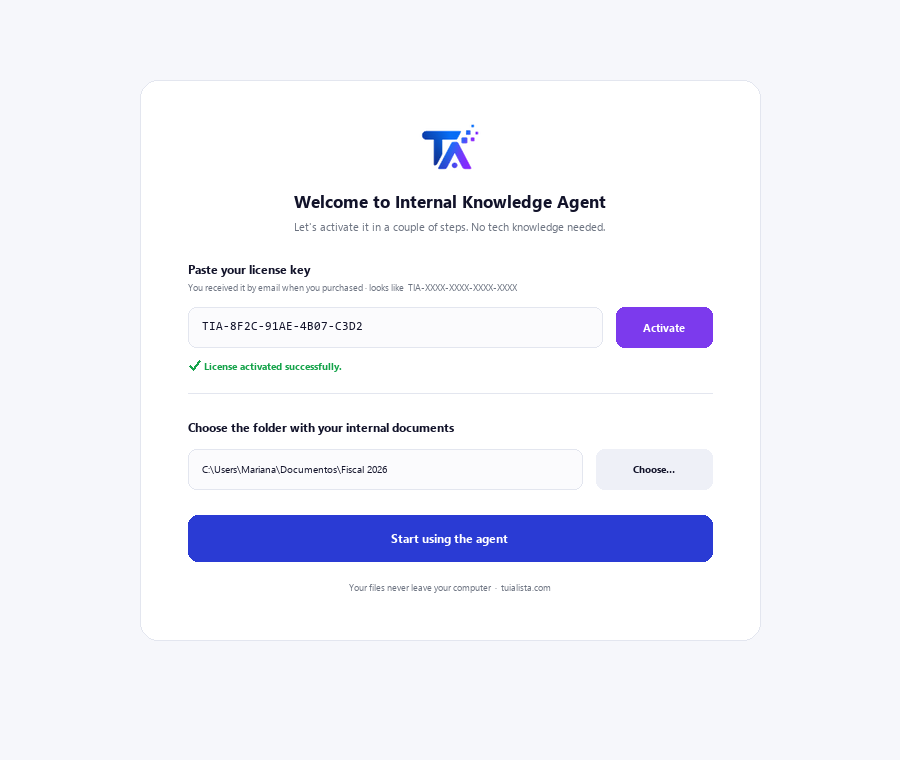
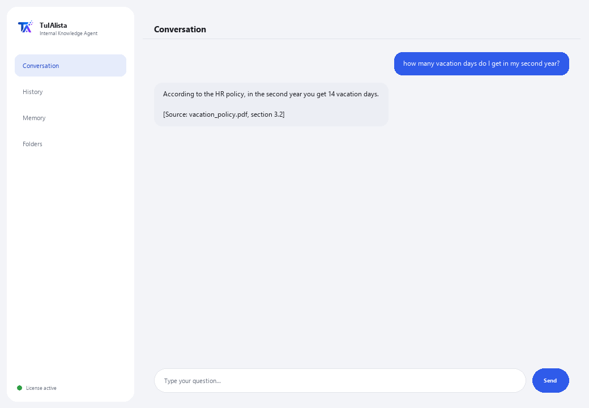

Internal Knowledge Agent
Turns all of your company's documents into a knowledge base that answers questions while citing the source.
What does it solve and what do you need?
In every company, knowledge is scattered: policies in a PDF, processes in a Word doc, prices in an Excel sheet, onboarding in a PowerPoint. The answer to “how many vacation days do I get” exists, but nobody knows which file it's in. This agent indexes everything and answers by citing exactly where each fact came from.
- You need: your license key (TIA-XXXX-XXXX-XXXX-XXXX) and the folder with your internal documents. No Python, no technical knowledge.
- First result in under 5 minutes: install, activate, pick your folder, and just ask whatever you need to know.
- Your company's knowledge never leaves your computer — the index is built and queried locally.
soporte@tuialista.com or visit tuialista.com/soporte — we usually reply the same business day.1 What this agent does
You point it at the folder with your internal documents and the agent:
- Indexes all of them (PDF, Word, Excel, CSV, PowerPoint, text, Markdown) into a local database.
- Splits each document into chunks to find the exact part that answers your question.
- Answers your team's questions using only those documents, and always cites where each fact came from ([Source: file, section]).
- Summarizes a topic by consolidating what several documents say.
- Detects knowledge gaps: topics mentioned a lot but with no dedicated document.
- Builds a directory of owners: who shows up as being in charge of what.
The essential part: if the answer isn't in the documents, the agent says so instead of making something up.
2 Installation (2 minutes)
For Windows. No constant internet connection needed, and nothing gets uploaded to the cloud.
Download the installer from tuialista.com/descargar (Knowledge agent) and open it. It creates a desktop shortcut with the logo — no Python or terminal needed.
Double-click the new icon. Paste your license key (you received it by email when you bought it) and click Activate. You'll see a green checkmark once it's valid.
Select the folder with your internal documents and click Start using the agent. Next time it starts right up — it remembers your key and your folder.

3 How to use it
The agent opens a chat window, like a messaging app — not a programmer's black screen. Its main use is asking questions directly in the text box, and it also has a few exploration commands:

> free-form question?The main use. Type your question as-is, e.g.: how many vacation days do I get in my second year? — the agent searches the documents and replies citing the source. If the information isn't there, it tells you instead of making something up.
> topicsLists the categories/areas your documents cover (policies, processes, security, HR, finance...) and how many files each one appears in.
> summary <topic>Pulls together what several documents say about a topic and builds an executive summary, flagging contradictions if there are any. E.g.: summary vacation.
> gapsTopics mentioned a lot but with no dedicated document — useful for knowing what policies are worth writing.
> directoryNames of people listed as owners/leads/contacts, and which documents they appear in.
> analyze <file>Lines, chunk count and a preview of an indexed document.
> exitEnds the session (exit also works).
4 Common use examples
Answer a question from your team
what's the process to request a purchase over $10,000? — an answer with the exact document and section cited.
Prep a summary for onboarding
summary security
Audit the documentation
topics → gaps — you see which areas are well covered and which have almost no documentation.
Find who's responsible
directory
5 Frequently asked questions
Do my company's documents get uploaded to the internet?
What formats does it accept?
Does it really cite the source?
What happens if the answer isn't in the documents?
What does it do if two documents contradict each other?
I added new documents, does it pick them up?
How does it choose which chunks to use?
Does it read a scanned PDF?
What language does it reply in?
Does it modify my documents?
6 Troubleshooting
It won't index a .pdf, .docx, .xlsx or .pptx
It says “0 documents indexed”
An answer cites the wrong document
It says “Invalid license” or asks to reconnect
“No AI providers configured”
None of these fixed your problem? Write to us directly — we'll gladly look into it with you.
soporte@tuialista.com or visit tuialista.com/soporte — we usually reply the same business day.7 Privacy and confidentiality
Your company's knowledge never leaves your computer.
- The agent reads, chunks and indexes the documents locally, on your own machine. It doesn't upload them to any server.
- Searches, topics, gaps and the directory are all calculated on your machine.
- The only thing that travels over the internet is: (1) a check that your license is active — which doesn't include your documents —, and (2) when answering a question or generating a summary, the most relevant chunks are sent to the AI engine to draft the reply. The rest of the knowledge stays local.